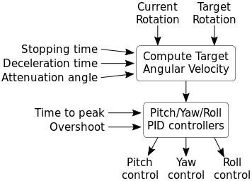
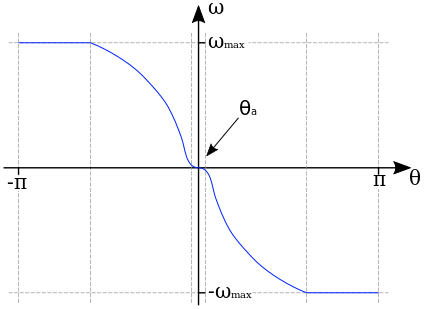
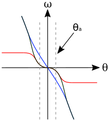
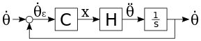

AutoPilot¶
kRPC provides an autopilot that can be used to hold a vessel in a chosen orientation. It automatically tunes itself to cope with vessels of differing size and control authority. This tutorial explains how the autopilot works, how to configure it and mathematics behind it.
Overview¶
The inputs to the autopilot are:
- A reference frame defining where zero rotation is,
- target pitch and heading angles,
- and an (optional) target roll angle.
When a roll angle is not specified, the autopilot will try to zero out any rotation around the roll axis but will not try to hold a specific roll angle.
The diagram below shows a high level overview of the autopilot. First, the current rotation and target rotation are used to compute the target angular velocity that is needed to rotate the vessel to face the target. Next, the components of this angular velocity in the pitch, yaw and roll axes of the vessel are passed to three PID controllers. The outputs of these controllers are used as the control inputs for the vessel.
There are several parameters affecting the operation of the autopilot, shown the the left of the diagram. They are covered in the next section.
Configuring the AutoPilot¶
There are several parameters that affect the behavior of the autopilot. The default values for these should suffice in most cases, but they can be adjusted to fit your needs.
- The stopping time is the maximum amount of time that the vessel should need to come to a complete stop. This limits the maximum angular velocity of the vessel. It is a vector of three stopping times, one for each of the pitch, roll and yaw axes. The default value is 0.5 seconds for each axis.
- The deceleration time is the minimum time the autopilot should take to decelerate the vessel to a stop, as it approaches the target direction. This is a minimum value, as the time required may be higher if the vessel does not have sufficient angular acceleration. It is a vector of three deceleration times, in seconds, for each of the pitch, roll and yaw axes. The default value is 5 seconds for each axis. A smaller value will make the autopilot decelerate more aggressively, turning the vessel towards the target more quickly. However, decreasing the value too much could result in overshoot.
- In order to avoid overshoot, the stopping time should be smaller than the deceleration time. This gives the autopilot some ‘spare’ acceleration, to adjust for errors in the vessels rotation, for example due to changing aerodynamic forces.
- The attenuation angle sets the region in which the autopilot considers the vessel to be ‘close’ to the target direction. In this region, the target velocity is attenuated based on how close the vessel is to the target. It is an angle, in degrees, for each of the pitch, roll and yaw axes. The default value is 1 degree in each axis. This attenuation prevents the controls from oscillating when the vessel is pointing in the correct direction. If you find that the vessel still oscillates, try increasing this value.
- The time to peak, in seconds, that the PID controllers take to adjust the angular velocity of the vessel to the target angular velocity. Decreasing this value will make the controllers try to match the target velocity more aggressively. It is a vector of three times, one for each of the pitch, roll and yaw axes. The default is 3 seconds in each axis.
- The overshoot is the percentage by which the PID controllers are allowed to overshoot the target angular velocity. Increasing this value will make the controllers try to match the target velocity more aggressively, but will cause more overshoot. It is a vector of three values, between 0 and 1, for each of the pitch, roll and yaw axes. The default is 0.01 in each axis.
Computing the Target Angular Velocity¶
The target angular velocity is the angular velocity needed to the vessel to rotate it towards the target direction. It is computed by summing a target angular speed for each of pitch, yaw and roll axes. If no roll angle is set, then the target angular velocity in the roll axis is simply set to 0.
The target angular speed \(\omega\) in a given axis is computed from the angular error \(\theta\) using the following function:
The equation for this function is:
The reasoning and derivation for this is as follows:
The vessel needs to rotate towards \(\theta = 0\). This means that the target angular speed \(\omega\) needs to be positive when \(\theta\) is negative, and negative when \(\theta\) is positive. This is done by multiplying by the term \(-\frac{\theta}{\lvert\theta\rvert}\), which is 1 when \(\theta < 0\) and -1 when \(\theta >= 0\)
We want the vessel to rotate at a maximum angular speed \(\omega_{max}\), which is determined by the stopping time \(t_{stop}\). Using the equations of motion under constant acceleration we can derive it as follows:
\[\begin{split}\omega &= \alpha t \\ \Rightarrow \omega_{max} &= \alpha_{max} t_{stop} \\ &= \frac{\tau_{max}t_{stop}}{I}\end{split}\]where \(\tau_{max}\) is the maximum torque the vessel can generate, and \(I\) is its moment of inertia.
We want the vessel to take time \(t_{decel}\) (the deceleration time) to go from moving at speed \(\omega_{max}\) to rest, when facing the target. And we want it to do this using a constant acceleration \(\alpha\). Using the equations of motion under constant acceleration we can derive the target velocity \(\omega\) in terms of the current angular error \(\theta\):
\[\begin{split}\omega &= \alpha t \\ \Rightarrow \alpha &= \frac{\omega}{t} = \frac{\omega_{max}}{t_{decel}} \\ \theta &= \frac{1}{2} \alpha t^2 \Rightarrow t = \sqrt{\frac{2 \theta}{\alpha}} \\ \Rightarrow \omega &= \alpha \sqrt{\frac{2 \theta}{\alpha}} = \sqrt{2 \alpha \theta}\end{split}\]To prevent the vessel from oscillating when it is pointing in the target direction, the gradient of the target angular speed curve at \(\theta = 0\) needs to be 0, and increase/decrease smoothly with increasing/decreasing \(\theta\).
This is not the case for the target angular speed calculated above. To correct this, we multiply by an attenuation function which has the required shape. The following diagram shows the shape of the attenuation function (line in red), the target velocity as calculated previously (line in blue) and the result of multiplying these together (dashed line in black):
The formula for the attenuation function is a logistic function, with the following formula:
\[\begin{split}f_a(\theta) &= \frac{1}{1 + e^{-6/\theta_a(\lvert\theta\rvert - \theta_a)}}\end{split}\]Note that the original function, derived from the equations of motion under constant acceleration, is only affected by the attenuation function close to the attenuation angle. This means that autopilot will use a constant acceleration to slow the vessel, until it gets close to the target direction.
Tuning the Controllers¶
Three PID controllers, one for each of the pitch, roll and yaw control axes, are used to control the vessel. Each controller takes the relevant component of the target angular velocity as input. The following describes how the gains for these controllers are automatically tuned based on the vessels available torque and moment of inertia.
The schematic for the entire system, in a single control axis, is as follows:
The input to the system is the angular speed around the control axis, denoted \(\omega\). The error in the angular speed \(\omega_\epsilon\) is calculated from this and passed to controller \(C\). This is a PID controller that we need to tune. The output of the controller is the control input, \(x\), that is passed to the vessel. The plant \(H\) describes the physical system, i.e. how the control input affects the angular acceleration of the vessel. The derivative of this is computed to get the new angular speed of the vessel, which is then fed back to compute the new error.
For the controller, \(C\), we use a proportional-integral controller. Note that the controller does not have a derivative term, so that the system behaves like a second order system and is therefore easy to tune.
The transfer function for the controller in the \(s\) domain is:
From the schematic, the transfer function for the plant \(H\) is:
\(x\) is the control input to the vessel, which is the percentage of the available torque \(\tau_{max}\) that is being applied to the vessel. Call this the current torque, denoted \(\tau\). This can be written mathematically as:
Combining this with the angular equation of motion gives the angular acceleration in terms of the control input:
Taking the laplace transform of this gives us:
We can now rewrite the transfer function for \(H\) as:
The open loop transfer function for the entire system is:
The closed loop transfer function is then:
The characteristic equation for the system is therefore:
The characteristic equation for a standard second order system is:
where \(\zeta\) is the damping ratio and \(\omega_0\) is the natural frequency of the system.
Equating coefficients between these equations, and rearranging, gives us the gains for the PI controller in terms of \(\zeta\) and \(\omega_0\):
We now need to choose some performance requirements to place on the system, which will allow us to determine the values of \(\zeta\) and \(\omega_0\), and therefore the gains for the controller.
The percentage by which a second order system overshoots is:
And the time it takes to reach the first peak in its output is:
These can be rearranged to give us \(\zeta\) and \(\omega_0\) in terms of overshoot and time to peak:
By default, kRPC uses the values \(O = 0.01\) and \(T_P = 3\).
Corner Cases¶
When sitting on the launchpad¶
In this situation, the autopilot cannot rotate the vessel. This means that the integral term in the controllers will build up to a large value. This is even true if the vessel is pointing in the correct direction, as small floating point variations in the computed error will also cause the integral term to increase. The integral terms are therefore fixed at zero to overcome this.
When the available angular acceleration is zero¶
This could be caused, for example, by the reaction wheels on a vessel running out of electricity resulting in the vessel having no torque.
In this situation, the autopilot also has little or no control over the vessel. This means that the integral terms in the controllers will build up to a large value over time. This is overcome by fixing the integral terms to zero when the available angular acceleration falls below a small threshold.
This situation also causes an issue with the controller gain auto-tuning: as the available angular acceleration tends towards zero, the controller gains tend towards infinity. When it equals zero, the auto-tuning would cause a division by zero. Therefore, auto-tuning is also disabled when the available acceleration falls below the threshold. This leaves the controller gains at their current values until the available acceleration rises again.